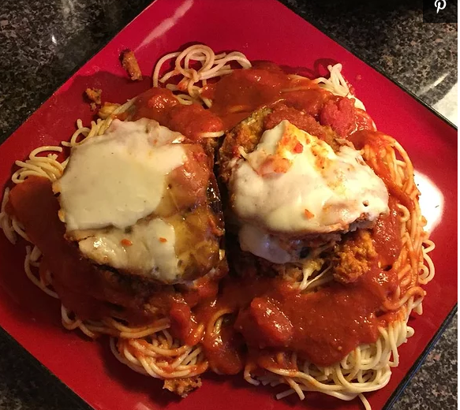

Eggplant Parmesan

Description
This is a beautiful and easy slow cook recipe for some wonderful eggplant parmesan.
Its restaurant quality and super delish!
Ingredients Needed
- Eggplant, peeled and cut into 1/2-inch slices
- 1 tablespoon salt, or as needed
- 1 cup extra-virgin olive oil, or as needed
- 2 eggs
- ⅓ cup water
- 3 tablespoons all-purpose flour
- ⅓ cup seasoned bread crumbs
- ½ cup grated Parmesan cheese
- 1 (32 ounce) jar prepared marinara sauce
- (16 ounce) package mozzarella cheese, slice
Steps:
- Place eggplant slices in a large bowl in layers, sprinkling each layer with salt.
Let stand for 30 minutes to drain. Rinse and dry on paper towels.
- Heat olive oil in a large skillet over medium heat. Whisk eggs with water and flour until smooth. Dip eggplant slices in batter and fry in the hot oil until golden brown,
working in batches of 2 to 3 slices at a time.
- Mix seasoned bread crumbs with Parmesan cheese in a bowl. Place 1/4 of the eggplant slices into a slow cooker and top with 1/4 of the crumbs, 1/4 of the marinara sauce,
and 1/4 of the mozzarella cheese. Repeat layers three more times.
- Cover and cook on Low until tender and flavors have blended, 4 to 5 hours.